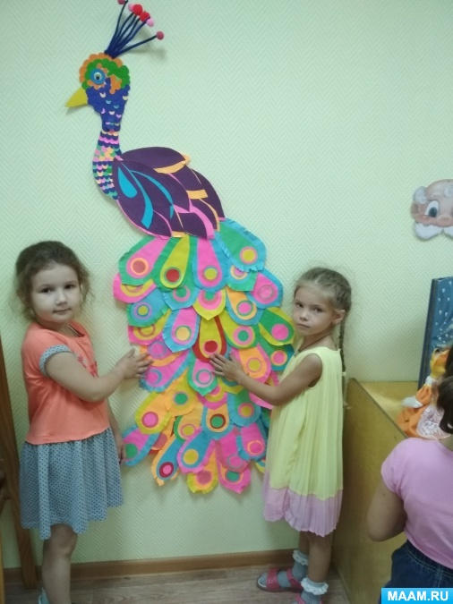

Цель: научить детей выполнять аппликацию по образцу, используя цветную бумагу разных цветов. Формировать интерес к данному виду труда.
образец «Сказочной птицы», иллюстрации птиц, иллюстрации к сказкам «Конек-Горбунок», «Жар-птица и Василиса-царевна» и «Иван-Царевич и Серый волк», аудиозапись «Голоса птиц», «Звуки леса». Цветной картон, полоски цветной бумаги, клей, ножницы, салфетка.
чтение русских народных сказок «Жар-птица и Василиса-царевна», «Конек-Горбунок» и др. Рассматривание иллюстраций. Занятие по лепке на тему «Сказочная птица», рисование птиц.
Под звуки утреннего леса, где солнечные лучи нежно касаются листьев деревьев, словно приглашают в мир фантазий и чудес, начинается наше занятие. Воспитатель встречает детей с теплотой и загадочностью:
— Тише, дети, не шумите,
Нашу сказку не спугните.
Здесь случаются чудеса.
Сказка спряталась пока!
Но не печальтесь, улыбнитесь —
Сказка дарит нам сюрприз!
Ребята с любопытством прислушиваются, ведь каждый из них знает, что сказка всегда приносит радость и неожиданности.
— Друзья мои, любите ли вы сказки? Я уверена, что да! Но скажите мне, насколько хорошо вы их знаете?
Дети с воодушевлением начинают вспоминать знакомые строки:
С радостью слушает воспитатель ответы своих подопечных, понимая, сколько удивительных историй уже стало частью их маленьких сердец.
— Отлично справились! И теперь, когда наши сердца наполнены сказками, давайте вспомним тех, кто особенно близок сердцам наших предков — Жар-птицы.
Дети оживлённо называют сказки, в которых сияющая птица занимает особое место.
Тема сегодняшнего занятия — «Сказочная птица». Воспитатель предлагает детям создать своего собственного волшебного крылатого друга, но перед этим приглашает взглянуть на удивительную поляну, где собрались самые разнообразные птицы.
Издревле образы птиц были частыми гостями в сказаниях всех народов мира. Они приносили людям счастье, свет и удачу. Птицы, словно посланники небес, летели сквозь века, оставляя свой след в легендах и мифах.
— В далёкие времена наши предки очень любили изображать этих прекрасных созданий, наделяя их невероятными способностями. Они вышивали их на полотенцах, одежде, украшали бытовые предметы. Почему же так привлекал людей этот образ? Что отличает сказочных птиц от реальных?
Дети делятся своими мыслями, рассказывая о ярких красках, причудливых формах крыльев и хвостов, необыкновенных хохолках. И хотя каждая сказочная птица уникальна, все они обладают общими чертами: тело, голова, хвост, перья.
— Посмотрите, как можно создать такую птичку из простых форм, — говорит воспитатель, беря в руки ножницы и демонстрируя, как из квадрата и прямоугольника может появиться изящное тельце и головка.
— Как вырезать круг, овал, треугольник? — спрашивает она, давая возможность ребятам проявить свои знания и умения.
А затем наступает момент волшебства: на бумаге появляются силуэты птиц, которые постепенно обретают жизнь благодаря ярким цветам и узорам. Хвосты становятся настоящим украшением, ведь именно они придают каждой птичке её особенную магическую силу.
— Ваша сказочная птица должна быть уникальной, — напоминает воспитатель. — Чем более необычной и интересной она станет, тем больше радости и счастья принесёт.
В тишине комнаты раздаются лишь шорох бумаги и лёгкий шелест ножниц. Каждый ребёнок погружён в своё маленькое чудо, создавая собственную сказочную историю.
Когда все работы завершены, воспитатель обращает внимание на аккуратность исполнения, хвалит ребят за старание и приглашает полюбоваться результатами творчества. Стена украшена целым семейством волшебных птиц, каждая из которых готова отправиться в путешествие по страницам новых сказок.
— Мы отлично потрудились сегодня, — подводит итоги воспитатель. — Ваши поделки просто восхитительны!